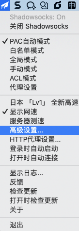
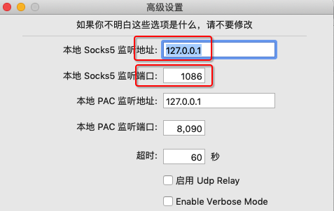
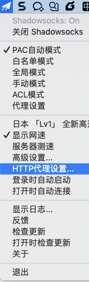
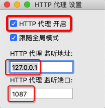

给git加代理
有时候由于科学上网、下载速度慢等原因，需要去给git添加代理实现加速。
此处和Git的代理相关的操作有：
- 查看代理
- 设置代理=添加代理
- 取消代理
下面详细解释如何操作：
注：假如要设置的代理地址是：socks5://127.0.0.1:1086
- 查看（当前是否使用）代理
- 查看本地代理
- 方式
- 命令行
git config http.proxy - 配置文件方式
cat .git/config
- 命令行
- 结果
- 可以看到：是否有
http部分，http中是否有proxy，proxy是否为空
- 可以看到：是否有
- 方式
- 查看全局代理
- 方式
- 命令行
git config --global http.proxy - 配置文件方式
cat ~/.gitconfig
- 命令行
- 结果
- 可以看到：是否有
http部分，http中是否有proxy，proxy是否为空
- 可以看到：是否有
- 方式
- 查看本地代理
- 设置（添加）代理
- 设置本地代理
- 方式
- 命令行
git config http.proxy socks5://127.0.0.1:1086 - 配置文件
vi .git/config- 加上：
http的proxy的值是socks5://127.0.0.1:1086[http] proxy = socks5://127.0.0.1:1086
- 加上：
- 命令行
- 方式
- 设置全局代理
- 方式
- 命令行
git config --global http.proxy socks5://127.0.0.1:1086 - 配置文件
vi ~/.gitconfig- 加上：
http的proxy的值是socks5://127.0.0.1:1086[http] proxy = socks5://127.0.0.1:1086
- 加上：
- 命令行
- 方式
- 设置本地代理
- 取消代理
- 取消本地代理
- 方式
- 命令行
git config --unset http.proxy - 配置文件
vi .git/config- 方式1：去掉
http的proxy[http] - 方式2：设置
proxy值是空[http] proxy =
- 方式1：去掉
- 命令行
- 方式
- 取消全局代理
- 方式
- 命令行
git config --global --unset http.proxy - 配置文件
vi ~/.gitconfig- 方式1：去掉
http的proxy[http] - 方式2：设置
proxy值是空[http] proxy =
- 方式1：去掉
- 命令行
- 方式
- 取消本地代理
背景知识
关于自己电脑中可以使用的代理
本地电脑中可以使用的代理，往往是像我一样，开启了科学上网的工具（SS/SSR/Trojan等），所以有了：
- （默认开启的）Socks5代理
- 举例：
socks5://127.0.0.1:1086- 自己
Mac中的ShadowsocksX-NG的R版1.4.4-R8 (1)高级设置->本地Sock5监听地址和端口，分别是127.0.0.1和1086- 
- 
- 所以Socks5的代理地址就是：
socks5://127.0.0.1:1086
- 自己
- 举例：
- （默认没开启，要自己手动开启的）http代理
- 举例：
http://127.0.0.1:1087- 自己
Mac中的ShadowsocksX-NG的R版1.4.4-R8 (1)HTTP代理设置->勾选：HTTP代理开启，以及HTTP代理监听地址和端口，分别是127.0.0.1和1087- 
- 
- 所以http的代理地址就是：
http://127.0.0.1:1087
- 自己
- 举例：
注意事项
git的代理没有https的proxy，只有http的proxy
后经git官网证实：
- 结论：只有
http的proxy，没有https的proxy - 解释
- （很多人）以为
http.proxy只针对 http://xxx 的http的网址https.proxy只针对 https://xxx 的https的网址
- 其实：此处
http.proxy中的http：指的是HTTP协议，包括http和https的网址proxy：指的是代理，都加上代理
- 所以：
- 即使是（ https://github.com 、https://gitee.com 等）https的git的url地址，也是http的proxy，而不是https的proxy
- 没有
- 命令行中的写法
git config https.proxy - 配置文件
- 包括
- 本地的：
.git/config - 全局的：
~/.gitconfig
- 本地的：
- 中的写法
[https] proxy = xxx
- 包括
- 命令行中的写法
- 只有
- 命令行中的写法：
git config http.proxy - 配置文件
- 包括
- 本地的：
.git/config - 全局的：
~/.gitconfig
- 本地的：
- 中的写法
[http] proxy = xxx
- 包括
- 命令行中的写法：
- （很多人）以为
特殊设置
单独针对某些git仓库=url 单独启用代理 或者 单独不用代理
举例：只给GitHub启用代理，其他不用代理
注：GitHub的地址是： https://github.com
- 命令行方式
- 本地代理
git config http.https://github.com.proxy socks5://127.0.0.1:1086 - 全局代理
git config --global http.https://github.com.proxy socks5://127.0.0.1:1086
- 本地代理
- 配置文件方式
- 编辑配置文件
- 本地
vi .git/config - 全局
vi ~/.gitconfig
- 本地
- 文件内容
[http "https://github.com"] proxy = socks5://127.0.0.1:1086
- 编辑配置文件
举例：其他全部启用代理（包括github），而gitee不用代理
- 命令行方式
- 本地
git config http.proxy socks5://127.0.0.1:1086 git config http.https://gitee.com.proxy '' - 全局
git config --global http.proxy socks5://127.0.0.1:1086 git config --global http.https://gitee.com.proxy ''
- 本地
- 配置文件方式
- 编辑配置文件
- 本地
vi .git/config - 全局
vi ~/.gitconfig
- 本地
- 文件内容
[http] proxy = socks5://127.0.0.1:1086 [http "https://gitee.com/"] proxy =
- 编辑配置文件